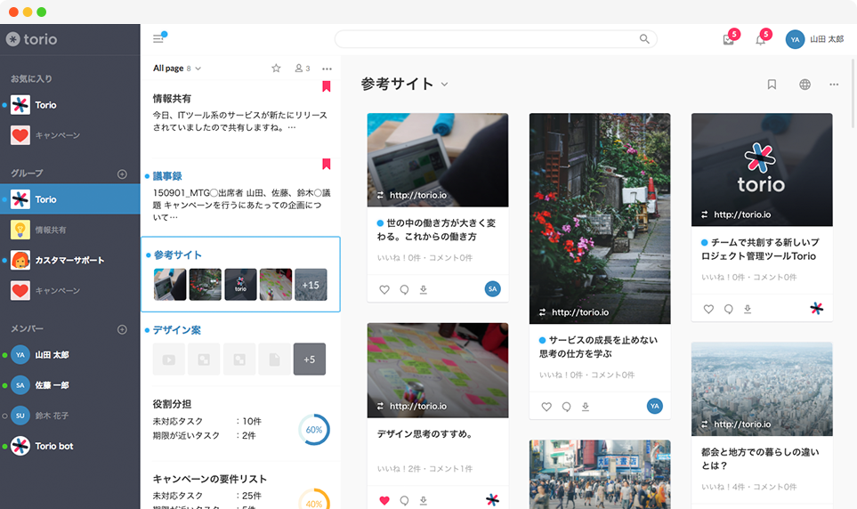

ノートで計画を立てる、記録を残す。
プロジェクトのスタートには計画が欠かせません。
ディスカッションした内容の記録にはノートが便利です。
文字スタイルも変更できるので、振り返る時にも見やすいように整理しておくことができます。
また、記録したノートを他のメンバーが編集することもできるので、
簡単にメンバー間でブラッシュアップしていくことができます。

プロジェクトのスタートには計画が欠かせません。
ディスカッションした内容の記録にはノートが便利です。
文字スタイルも変更できるので、振り返る時にも見やすいように整理しておくことができます。
また、記録したノートを他のメンバーが編集することもできるので、
簡単にメンバー間でブラッシュアップしていくことができます。
チーム内で役割分担をしたら、タスクにセットしていきましょう。
チェックリストとしてタスクのグルーピングができ、
ドラッグ＆ドロップで簡単に入れ替えが可能です。
GTD(Getting Things Done)とも相性が良いです。
ローカルのデータをアップロードできるのはもちろん、
ウェブサイトのブックマークにもご利用いただけるのがファイルです。
プロジェクトに必要なデータを保存するもよし、
参考にしたいサイトや記事の共有、
デザインのチェックに利用するもよしの便利な機能です。
プッシュ通知、メールやサービス内通知で更新情報やお知らせを通知します。
ノート・タスク・ファイル内でコメントを残してやりとりができます。
好きな投稿などのいいねと思ったものに簡単に気持ちを伝えることができます。
ログインしていないユーザーにページを公開することができます。（近日公開予定）
全プロジェクトからすばやく検索することができます。
気に入ったグループ、またはページをお気に入り登録すると固定表示ができます。
Slack、Google drive、Dropboxなど外部連携ができます。（近日公開予定）
グループの閲覧権限にオーナー、メンバー、ゲストの３種類を設定できます。
グループが作成でき、ノート、タスク、ファイルの３種類からページを作成できます。
ベータ版として現在、無料公開しております。